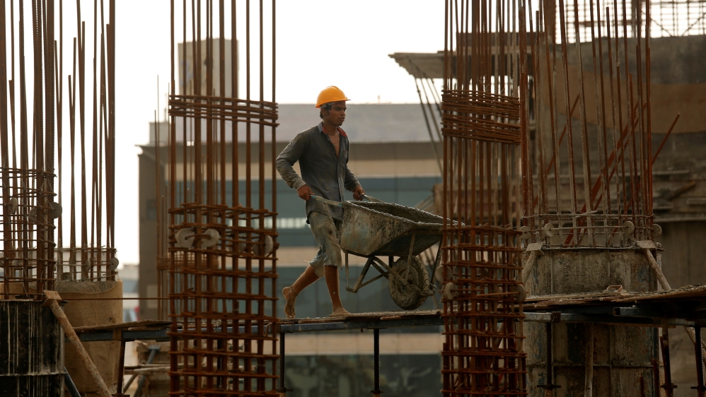
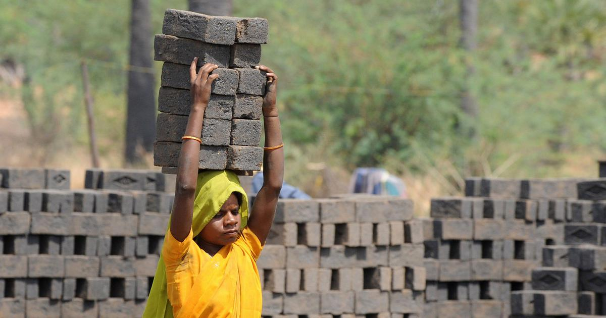

About the Issue
Despite its expansion over the past 70 years since independence, India has the highest number of unfair labor practices.
What is the issue about?
People who work, regardless of what they do, should be recognized to some level. However, as daily wage laborers and IT employees in India will attest, this is not always the case. Employers do everything they can to save expenses and keep lowering costs until they no longer care about their employees' problems. Many people are living wretched lives as a result of poor salaries and overwork, and there are no alternatives in sight, even in the far future. Even more concerning is the issue of child labor, which appears to be unavoidable due to India's labor problems. Children often start working at the age of seven and work for the remainder of their lives, sometimes in inhumane and unhygienic conditions. When you don't have any money in your pocket, life dangers don't appear as severe. This may be traced back to labor practices, which state that underpaying workers and extracting as much "juice" as possible is acceptable.
Who are the people affected?
The people who are affected by this issue include daily wage employees as well as IT workers who are overworked and underpaid by their companies. Because this occurs most frequently in India, Indians are the most affected.
Where is this even happening?
This problem exists in emerging nations such as India, China, and other undeveloped African countries, but those countries have recognized it, but India is unaware of or unconcerned about the matter. This is why I intend to concentrate on India since the scope of the problem is worldwide, making it impossible to cover in a single post, and because it is best to concentrate on the most impacted countries. If this problem can be solved in India, I believe the rest of the globe will be quite straightforward to address.
Why is this even happening?
This is due to the fact that most Indian regulations are lax, and even where they are, it is quite simple to "pay your way out" of a problem. The new rules adopted appear to address the problem, but in reality, they make no difference, and those who are affected by it continue to be afflicted and receive no compensation. In reality, the Indian legal and police systems are constructed in such a way that they may "extract" the most from the people, adding salt to the already existing wounds. As a result, given the consequent issues, this issue must be brought to the public's notice and resolved as quickly as feasible.